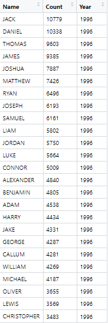
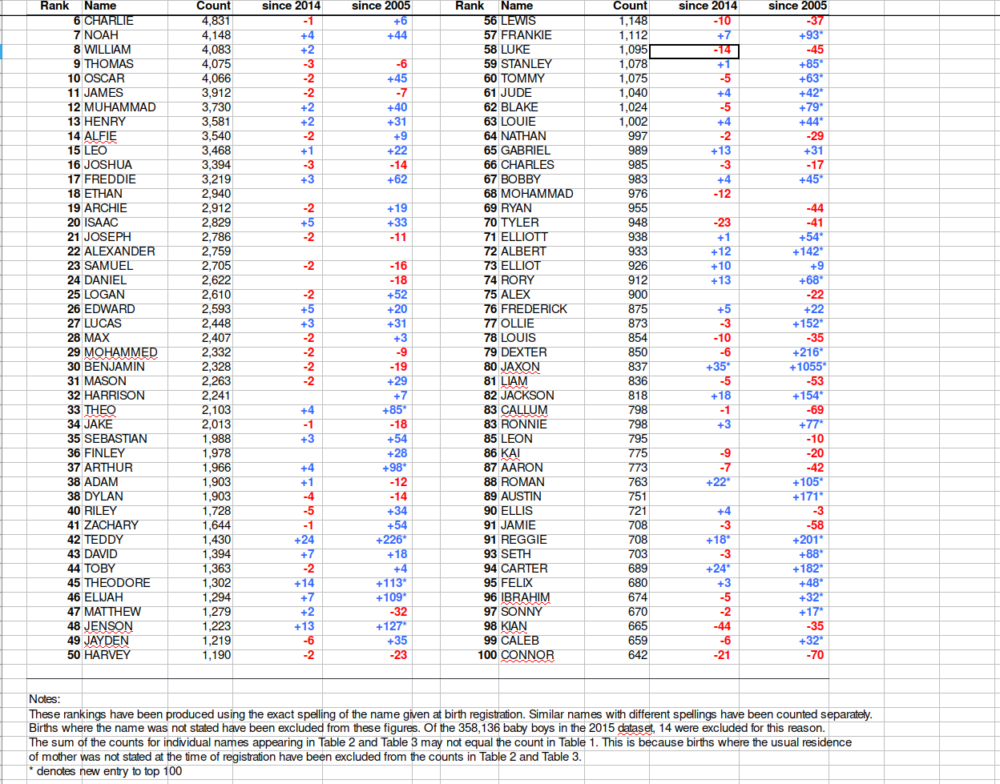
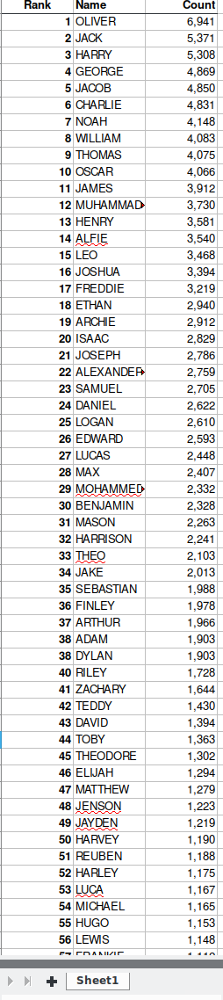
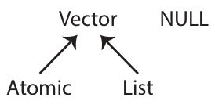
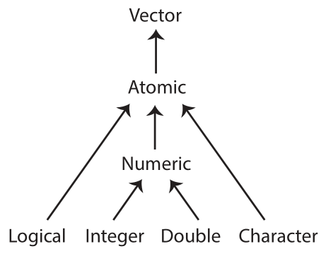
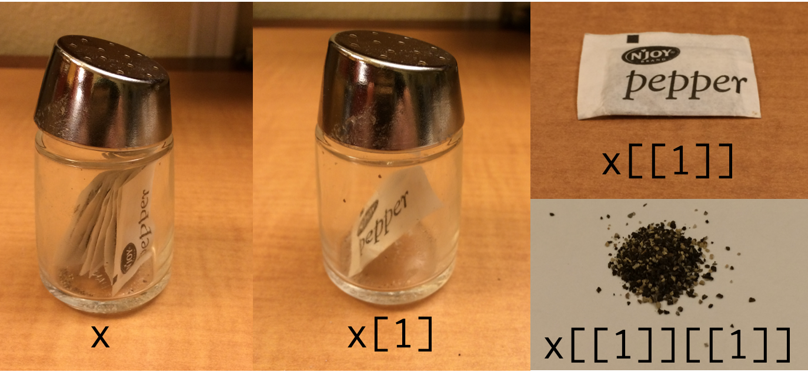
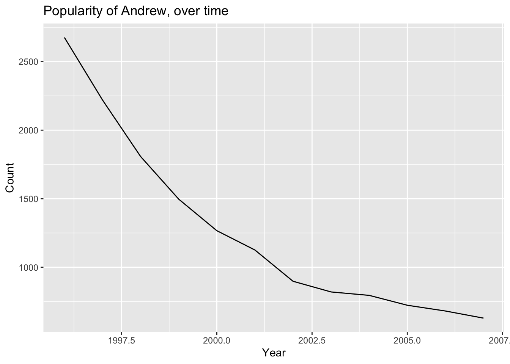

library(tidyverse)
library(rmarkdown)
library(readxl) # installed with tidyverse, but not loaded into R sessionR Data Wrangling
Topics
- Loading Excel worksheets
- Iterating over files
- Writing your own functions
- Filtering with regular expressions (regex)
- Reshaping data
Setup
Software and Materials
Follow the R Installation instructions and ensure that you can successfully start Positron.
Class Structure
Informal - Ask questions at any time. Really!
Collaboration is encouraged - please spend a minute introducing yourself to your neighbors!
Prerequisites
This is an intermediate / advanced R course:
- Assumes intermediate knowledge of R
- Relatively fast-paced
Launch an R session
Start Positron and open the workshop materials folder:
- On Mac, Positron will be in your Applications folder. On Windows, click the start button and search for Positron.
- In Positron go to
File -> Open Folderand choose the workshop materials folder on your desktop. Positron makes it the working directory, which is where the data files are, and lists its files in the Explorer on the left. - In the Explorer, click the file with the word “BLANK” in the name to open it.
Packages
You should have already installed the tidyverse and rmarkdown packages onto your computer before the workshop — see R Installation. Now let’s load these packages into the search path of our R session.
Workshop Outline
Example data
The UK Office for National Statistics provides yearly data on the most popular boys names going back to 1996. The data is provided separately for boys and girls and is stored in Excel spreadsheets.
Overall Goal
Our mission is to extract and graph the top 100 boys names in England and Wales for every year since 1996.

Exercise 0: Problems with the data
There are several things that make our goal challenging. Let’s take a look at the data:
- Locate the files named
1996boys_tcm77-254026.xlsxand2015boysnamesfinal.xlsxand open them separately in a spreadsheet program.
(If you don’t have a spreadsheet program installed on your computer you can download one from https://www.libreoffice.org/download/download/).
What issues can you identify that might make working with these data difficult?
In what ways is the format different between the two files?
TipExercise 0 solution
- Multiple Excel sheets in each file, each with a different name, but each file contains a
Table 1. - The data does not start on row one. Headers are on row 7, followed by a blank line, followed by the actual data.
- The data is stored in an inconvenient way, with ranks 1-50 in the first set of columns and ranks 51-100 in a second set of columns.
- The second worksheet
2015boysnamesfinal.xlsxcontains extra columns between the data of interest, resulting in the second set of columns (ranks 51-100) being placed in a different position. - The year from which the data comes is only reported in the Excel file name, not within the data itself.
- There are notes below the data.
These differences will make it more difficult to automate re-arranging the data since we have to write code that can handle different input formats.
Steps to accomplish the goal of extracting and graphing the top 100 boys names in England and Wales for every year since 1996:
Explore example data to highlight problems (already done!)
Reading data from multiple Excel worksheets into R data frames
- list Excel file names in a character vector
- read Excel sheetnames into a list of character vectors
- read Excel data for “Table 1” only into a list of data frames
Clean up data within each R data frame
- sort and merge columns within each data frame inside the list
- drop missing values from each data frame
- reshape data format from wide to long
Organize the data into one large data frame and store it
- create a year column within each data frame within the list
- append all the data frames in the list into one large data frame
NOTE: please make sure you close the Excel files before continuing with the workshop, otherwise you may encounter issues with file paths when reading the data into R.
Working with Excel worksheets
GOAL: To learn how to read data from multiple Excel worksheets into R data frames. In particular:
- List Excel file names in a character vector
- Read Excel sheetnames into a list of character vectors
- Read Excel data for “Table 1” only into a list of data frames
As you can see, the data is in quite a messy state. Note that this is not a contrived example; this is exactly the way the data came to us from the UK government website! Let’s start cleaning and organizing it.
Each Excel file contains a worksheet with the boy names data we want. Each file also contains additional supplemental worksheets that we are not currently interested in. As noted above, the worksheet of interest differs from year to year, but always has “Table 1” in the sheet name.
The first step is to get a character vector of file names.
# read file names into a character vector
boy_file_names <- list.files("dataSets/boys", full.names = TRUE)Now that we’ve told R the names of the data files, we can start working with them. For example, the first file is:
# view path of first file
boy_file_names[1][1] "dataSets/boys/1996boys_tcm77-254026.xlsx"and we can use the excel_sheets() function from the readxl package within tidyverse to list the worksheet names from this file.
# list worksheet names from first file
excel_sheets(boy_file_names[1])[1] "Contents" "Table 1 - Top 100 boys, E&W"
[3] "Table 2-Top 10 boys by month" "Table 3 - Boys names - E&W" Iterating with map()
Now that we know how to retrieve the names of the worksheets in an Excel file, we could start writing code to extract the sheet names from each file, e.g.,
# extract sheet names from each file
excel_sheets(boy_file_names[1])[1] "Contents" "Table 1 - Top 100 boys, E&W"
[3] "Table 2-Top 10 boys by month" "Table 3 - Boys names - E&W" excel_sheets(boy_file_names[2])[1] "Contents" "Table 1 - Top 100 boys, E&W"
[3] "Table 2 - Top 100 boys, England" "Table 3 - Top 100 boys, Wales"
[5] "Table 4 - Top 10 boys by region" "Table 5 - Top 10 boys by month"
[7] "Table 6 - Boys names - E&W" ## ...
excel_sheets(boy_file_names[20]) [1] "Contents" "Metadata" "Terms and Conditions"
[4] "Table 1" "Table 2" "Table 3"
[7] "Table 4" "Table 5" "Table 6"
[10] "Related Publications"This is not a terrible idea for a small number of files, but it is more convenient to let R do the iteration for us. We could use a for loop, or sapply(), but the map() family of functions from the purrr package within tidyverse gives us a more consistent alternative, so we’ll use that.
# map(object to iterate over, function that does task within each iteration)
map(boy_file_names, excel_sheets)[[1]]
[1] "Contents" "Table 1 - Top 100 boys, E&W"
[3] "Table 2-Top 10 boys by month" "Table 3 - Boys names - E&W"
[[2]]
[1] "Contents" "Table 1 - Top 100 boys, E&W"
[3] "Table 2 - Top 100 boys, England" "Table 3 - Top 100 boys, Wales"
[5] "Table 4 - Top 10 boys by region" "Table 5 - Top 10 boys by month"
[7] "Table 6 - Boys names - E&W"
[[3]]
[1] "Contents" "Table 1 - Top 100 boys' names"
[3] "Table 2 - Top 100 boys, England" "Table 3 - Top 100 boys, Wales"
[5] "Table 4 - Top 10 boys by region" "Table 5 - Top 10 boys by month"
[7] "Table 6 - Boys names - E&W"
[[4]]
[1] "Contents" "Table 1 - Top 100 boys' names"
[3] "Table 2 - Top 100 boys, England" "Table 3 - Top 100 boys, Wales"
[5] "Table 4 - Top 10 boys by region" "Table 5 - Top 10 boys by month"
[7] "Table 6 - Boys names - E&W"
[[5]]
[1] "Contents" "Table 1 - Top 100 boys, E&W"
[3] "Table 2 - Top 100 boys, England" "Table 3 - Top 100 boys, Wales"
[5] "Table 4 - Top 10 boys by region" "Table 5 - Top 10 boys by month"
[7] "Table 6 - Boys names - E&W"
[[6]]
[1] "Contents" "Table 1 - Top 100 boys, E&W"
[3] "Table 2 - Top 100 boys, England" "Table 3 - Top 100 boys, Wales"
[5] "Table 4 - Top 10 boys by region" "Table 5 - Top 10 boys by month"
[7] "Table 6 - Boys names - E&W"
[[7]]
[1] "Contents" "Table 1 - Top 100 boys, E&W"
[3] "Table 2 - Top 100 boys, England" "Table 3 - Top 100 boys, Wales"
[5] "Table 4 - Top 10 boys by region" "Table 5 - Top 10 boys by month"
[7] "Table 6 - Boys names - E&W"
[[8]]
[1] "Contents" "Table 1 - Top 100 boys, E&W"
[3] "Table 2 - Top 100 boys, England" "Table 3 - Top 100 boys, Wales"
[5] "Table 4 - Top 10 boys by region" "Table 5 - Top 10 boys by month"
[7] "Table 6 - Boys names - E&W"
[[9]]
[1] "Contents" "Table 1 - Top 100 boys, E&W"
[3] "Table 2 - Top 100 boys, England" "Table 3 - Top 100 boys, Wales"
[5] "Table 4 - Top 10 boys by region" "Table 5 - Top 10 boys by month"
[7] "Table 6 - Boys names - E&W"
[[10]]
[1] "Contents" "Table 1 - Top 100 boys, E&W"
[3] "Table 2 - Top 100 boys, England" "Table 3 - Top 100 boys, Wales"
[5] "Table 4 - Top 10 boys by region" "Table 5 - Top 10 boys by month"
[7] "Table 6 - Boys names - E&W"
[[11]]
[1] "Contents" "Table 1 - Top 100 boys, E&W"
[3] "Table 2 - Top 100 boys, England" "Table 3 - Top 100 boys, Wales"
[5] "Table 4 - Top 10 boys by region" "Table 5 - Top 10 boys by month"
[7] "Table 6 - Boys names - E&W"
[[12]]
[1] "Contents" "Table 1 - Top 100 boys, E&W"
[3] "Table 2 - Top 100 boys, England" "Table 3 - Top 100 boys, Wales"
[5] "Table 4 - Top 10 boys by region" "Table 5 - Top 10 boys by month"
[7] "Table 6 - Boys names - E&W"
[[13]]
[1] "Contents" "Table 1 - Top 100 boys' names"
[3] "Table 2 - Top 100 boys, England" "Table 3 - Top 100 boys, Wales"
[5] "Table 4 - Top 10 boys by region" "Table 5 - Top 10 boys by month"
[7] "Table 6 - Boys names - E&W"
[[14]]
[1] "Contents" "Table 1 - Top 100 boys' names"
[3] "Table 2 - Top 100 boys, England" "Table 3 - Top 100 boys, Wales"
[5] "Table 4 - Top 10 boys by region" "Table 5 - Top 10 boys by month"
[7] "Table 6 - Boys names - E&W"
[[15]]
[1] "Contents" "Table 1 - Top 100 boys, E&W"
[3] "Table 2 - Top 100 boys, England" "Table 3 - Top 100 boys, Wales"
[5] "Table 4 - Top 10 boys by region" "Table 5 - Top 10 boys by month"
[7] "Table 6 - Boys names - E&W"
[[16]]
[1] "Contents" "Metadata"
[3] "Terms and Conditions" "Table 1 - Top 100 boys, E&W"
[5] "Table 2 - Top 100 boys, England" "Table 3 - Top 100 boys, Wales"
[7] "Table 4 - Top 10 boys by region" "Table 5 - Top 10 boys by month"
[9] "Table 6 - Boys names - E&W" "Related Publications"
[[17]]
[1] "Contents" "Metadata"
[3] "Terms and Conditions" "Table 1 - Top 100 boys, E&W"
[5] "Table 2 - Top 100 boys, England" "Table 3 - Top 100 boys, Wales"
[7] "Table 4 - Top 10 boys by region" "Table 5 - Top 10 boys by month"
[9] "Table 6 - Boys names - E&W" "Related Publications"
[[18]]
[1] "Contents" "Metadata"
[3] "Terms and Conditions" "Table 1 - Top 100 boys, E&W"
[5] "Table 2 - Top 100 boys, England" "Table 3 - Top 100 boys, Wales"
[7] "Table 4 - Top 10 boys by region" "Table 5 - Top 10 boys by month"
[9] "Table 6 - Boys names - E&W" "Related Publications"
[[19]]
[1] "Contents" "Metadata"
[3] "Terms and Conditions" "Table 1 - Top 100 boys, E&W"
[5] "Table 2 - Top 100 boys, England" "Table 3 - Top 100 boys, Wales"
[7] "Table 4 - Top 10 boys by region" "Table 5 - Top 10 boys by month"
[9] "Table 6 - Boys names - E&W" "Related Publications"
[[20]]
[1] "Contents" "Metadata" "Terms and Conditions"
[4] "Table 1" "Table 2" "Table 3"
[7] "Table 4" "Table 5" "Table 6"
[10] "Related Publications"Filtering strings using regex
To extract the correct worksheet names we need a way to extract strings containing “Table 1”.
Base R provides some string manipulation capabilities (see ?regex, ?sub and ?grep), but we will use the stringr package within tidyverse because it is more user-friendly. stringr provides functions to:
- detect
- locate
- extract
- match
- replace
- combine
- split
strings. Here we want to detect the pattern “Table 1”, and only return elements with this pattern. We can do that using the str_subset() function:
- The first argument to
str_subset()is character vector we want to search in. - The second argument is a regular expression matching the pattern we want to retain.
# example syntax
str_subset(character_vector, regex_pattern)If you are not familiar with regular expressions (regex), http://www.regexr.com/ is a good place to start. Regex is essentially just a programmatic way of doing operations like “find” or “find and replace” in MS Word or Excel.
Now that we know how to filter character vectors using str_subset() we can identify the correct sheet in a particular Excel file. For example,
# we can do this by nesting functions
str_subset(excel_sheets(boy_file_names[1]), pattern = "Table 1")[1] "Table 1 - Top 100 boys, E&W"# or, we can do this by piping functions
excel_sheets(boy_file_names[1]) %>% str_subset(pattern = "Table 1")[1] "Table 1 - Top 100 boys, E&W"Writing your own functions
The next step is to retrieve worksheet names and subset them.
The map* functions are useful when you want to apply a function to a vector of inputs and obtain the return values for each input. This is very convenient when a function already exists that does exactly what you want. In the examples above we mapped the excel_sheets() function to the elements of a character vector containing file names.
However, there is no function that both:
- Retrieves worksheet names, and
- Subsets the names
So, we will have to write one. Fortunately, writing functions in R is easy. Functions require 3 elements:
- A name
- One or more arguments
- A body containing computations
Anatomy of a function:
# general function syntax
function_name <- function(arg1, arg2, ....) {
body of function # where stuff happens
return( results )
}Simple examples:
# one argument
myfun <- function(x) {
x^2
}
myfun(1:10) [1] 1 4 9 16 25 36 49 64 81 100# two arguments
myfun2 <- function(x, y) {
z <- x^2 + y
return(z)
}
myfun2(x=1:10, y=42) [1] 43 46 51 58 67 78 91 106 123 142Example using the Excel data:
# function to extract different sheet names using regex
get_data_sheet_name <- function(file, term){
excel_sheets(file) %>% str_subset(pattern = term)
}The goal is generalization — we can now extract any sheet name using this one function:
# extract different sheet names using regex
get_data_sheet_name(boy_file_names[1], term = "Table 1")[1] "Table 1 - Top 100 boys, E&W"get_data_sheet_name(boy_file_names[1], term = "Table 2")[1] "Table 2-Top 10 boys by month"Now we can map this new function over our vector of file names.
# map(object to iterate over,
# function that does task within each iteration,
# arguments to previous function)
map(boy_file_names, # list object
get_data_sheet_name, # our function
term = "Table 1") # argument to our function `get_data_sheet_name()`[[1]]
[1] "Table 1 - Top 100 boys, E&W"
[[2]]
[1] "Table 1 - Top 100 boys, E&W"
[[3]]
[1] "Table 1 - Top 100 boys' names"
[[4]]
[1] "Table 1 - Top 100 boys' names"
[[5]]
[1] "Table 1 - Top 100 boys, E&W"
[[6]]
[1] "Table 1 - Top 100 boys, E&W"
[[7]]
[1] "Table 1 - Top 100 boys, E&W"
[[8]]
[1] "Table 1 - Top 100 boys, E&W"
[[9]]
[1] "Table 1 - Top 100 boys, E&W"
[[10]]
[1] "Table 1 - Top 100 boys, E&W"
[[11]]
[1] "Table 1 - Top 100 boys, E&W"
[[12]]
[1] "Table 1 - Top 100 boys, E&W"
[[13]]
[1] "Table 1 - Top 100 boys' names"
[[14]]
[1] "Table 1 - Top 100 boys' names"
[[15]]
[1] "Table 1 - Top 100 boys, E&W"
[[16]]
[1] "Table 1 - Top 100 boys, E&W"
[[17]]
[1] "Table 1 - Top 100 boys, E&W"
[[18]]
[1] "Table 1 - Top 100 boys, E&W"
[[19]]
[1] "Table 1 - Top 100 boys, E&W"
[[20]]
[1] "Table 1"Reading Excel data files
Now that we know the correct worksheet from each file, we can actually read those data into R. We can do that using the read_excel() function.
We’ll start by reading the data from the first file, just to check that it works. Recall that the actual data starts on row 7, so we want to skip the first 6 rows. We can use the glimpse() function from the dplyr package within tidyverse to view the output.
# read in data from the first file only
temp <- read_excel(
path = boy_file_names[1],
sheet = get_data_sheet_name(boy_file_names[1], term = "Table 1"),
skip = 6
)
glimpse(temp)Rows: 59
Columns: 7
$ ...1 <chr> NA, "1", "2", "3", "4", "5", "6", "7", "8", "9", "10", "11",…
$ Name...2 <chr> NA, "JACK", "DANIEL", "THOMAS", "JAMES", "JOSHUA", "MATTHEW"…
$ Count...3 <dbl> NA, 10779, 10338, 9603, 9385, 7887, 7426, 6496, 6193, 6161, …
$ ...4 <lgl> NA, NA, NA, NA, NA, NA, NA, NA, NA, NA, NA, NA, NA, NA, NA, …
$ ...5 <dbl> NA, 51, 52, 53, 54, 55, 56, 57, 58, 59, 60, 61, 62, 63, 64, …
$ Name...6 <chr> NA, "DOMINIC", "NICHOLAS", "BRANDON", "RHYS", "MARK", "MAX",…
$ Count...7 <dbl> NA, 1519, 1385, 1337, 1259, 1222, 1192, 1186, 1135, 1128, 11…Note that R has added a suffix to each column name ...1, ...2, ...3, etc. because duplicate names are not allowed, so the suffix serves to disambiguate. The trailing number represents the index of the column.
Exercise 1
- Write a function called
read_boys_namesthat takes a file name as an argument and reads the worksheet containing “Table 1” from that file. Don’t forget to skip the first 6 rows.
## - Test your function by using it to read one of the boys names Excel files.
## - Use the
map()function to create a list of data frames calledboysNamesfrom all the Excel files, using the function you wrote in step 1.
##
TipExercise 1 solution
- Write a function called
read_boys_namesthat takes a file name as an argument and reads the worksheet containing “Table 1” from that file. Don’t forget to skip the first 6 rows.
read_boys_names <- function(file, sheet_name) {
read_excel(
path = file,
sheet = get_data_sheet_name(file, term = sheet_name),
skip = 6
)
}- Test your function by using it to read one of the boys names Excel files.
read_boys_names(boy_file_names[1], sheet_name = "Table 1") %>% glimpse()Rows: 59
Columns: 7
$ ...1 <chr> NA, "1", "2", "3", "4", "5", "6", "7", "8", "9", "10", "11",…
$ Name...2 <chr> NA, "JACK", "DANIEL", "THOMAS", "JAMES", "JOSHUA", "MATTHEW"…
$ Count...3 <dbl> NA, 10779, 10338, 9603, 9385, 7887, 7426, 6496, 6193, 6161, …
$ ...4 <lgl> NA, NA, NA, NA, NA, NA, NA, NA, NA, NA, NA, NA, NA, NA, NA, …
$ ...5 <dbl> NA, 51, 52, 53, 54, 55, 56, 57, 58, 59, 60, 61, 62, 63, 64, …
$ Name...6 <chr> NA, "DOMINIC", "NICHOLAS", "BRANDON", "RHYS", "MARK", "MAX",…
$ Count...7 <dbl> NA, 1519, 1385, 1337, 1259, 1222, 1192, 1186, 1135, 1128, 11…- Use the
map()function to create a list of data frames calledboysNamesfrom all the Excel files, using the function you wrote in step 1.
boysNames <- map(boy_file_names, read_boys_names, sheet_name = "Table 1")Data cleanup
GOAL: To learn how to clean up data within each R data frame. In particular:
- Sort and merge columns within each data frame inside the list
- Drop missing values from each data frame
- Reshape data format from wide to long
Now that we’ve read in the data, we can see that there are some problems we need to fix. Specifically, we need to:
- fix column names
- get rid of blank row at the top and the notes at the bottom
- get rid of extraneous “changes in rank” columns if they exist
- transform the side-by-side tables layout to a single table
# Rank 1:50 --- Names / Counts are in columns 2 and 3
# Rank 51:100 --- Names / Counts are in columns 6 and 7
glimpse(boysNames[[1]]) Rows: 59
Columns: 7
$ ...1 <chr> NA, "1", "2", "3", "4", "5", "6", "7", "8", "9", "10", "11",…
$ Name...2 <chr> NA, "JACK", "DANIEL", "THOMAS", "JAMES", "JOSHUA", "MATTHEW"…
$ Count...3 <dbl> NA, 10779, 10338, 9603, 9385, 7887, 7426, 6496, 6193, 6161, …
$ ...4 <lgl> NA, NA, NA, NA, NA, NA, NA, NA, NA, NA, NA, NA, NA, NA, NA, …
$ ...5 <dbl> NA, 51, 52, 53, 54, 55, 56, 57, 58, 59, 60, 61, 62, 63, 64, …
$ Name...6 <chr> NA, "DOMINIC", "NICHOLAS", "BRANDON", "RHYS", "MARK", "MAX",…
$ Count...7 <dbl> NA, 1519, 1385, 1337, 1259, 1222, 1192, 1186, 1135, 1128, 11…# Rank 1:50 --- Names / Counts are in columns 2 and 3
# Rank 51:100 --- Names / Counts are in columns 7 and 8
glimpse(boysNames[[10]]) Rows: 61
Columns: 9
$ ...1 <chr> NA, "1", "2", "3", "4", "5", "6", "7", "8", "9", "10"…
$ Name...2 <chr> NA, "JACK", "JOSHUA", "THOMAS", "JAMES", "OLIVER", "D…
$ Count...3 <dbl> NA, 7434, 7167, 6792, 5654, 5516, 5270, 5219, 5106, 4…
$ `since 2004...4` <chr> NA, "-", "-", "-", "-", "+2", "-1", "-1", "-", "+2", …
$ ...5 <lgl> NA, NA, NA, NA, NA, NA, NA, NA, NA, NA, NA, NA, NA, N…
$ ...6 <dbl> NA, 51, 52, 53, 53, 55, 56, 57, 58, 59, 60, 61, 62, 6…
$ Name...7 <chr> NA, "NOAH", "MUHAMMAD", "ALEX", "ISAAC", "OSCAR", "RE…
$ Count...8 <dbl> NA, 1346, 1318, 1302, 1302, 1262, 1256, 1172, 1126, 1…
$ `since 2004...9` <chr> NA, "+23", "-1", "-7", "+5", "+4", "-4", "+6", "+17",…# Rank 1:50 --- Names / Counts are in columns 2 and 3
# Rank 51:100 --- Names / Counts are in columns 8 and 9
glimpse(boysNames[[20]]) Rows: 61
Columns: 11
$ Rank...1 <chr> NA, "1", "2", "3", "4", "5", "6", "7", "8", "9", "10…
$ Name...2 <chr> NA, "OLIVER", "JACK", "HARRY", "GEORGE", "JACOB", "C…
$ Count...3 <dbl> NA, 6941, 5371, 5308, 4869, 4850, 4831, 4148, 4083, …
$ `since 2014...4` <chr> NA, " ", " ", " ", "+3 ", "-1 ", "-1 ", "+4 ", "+…
$ `since 2005...5` <chr> NA, "+4 ", "-1 ", "+6 ", "+13 ", "+16 ", "+6 ", "+44…
$ ...6 <lgl> NA, NA, NA, NA, NA, NA, NA, NA, NA, NA, NA, NA, NA, …
$ Rank...7 <chr> NA, "51", "52", "53", "54", "55", "56", "57", "58", …
$ Name...8 <chr> NA, "REUBEN", "HARLEY", "LUCA", "MICHAEL", "HUGO", "…
$ Count...9 <dbl> NA, 1188, 1175, 1167, 1165, 1153, 1148, 1112, 1095, …
$ `since 2014...10` <chr> NA, " ", "-7 ", "+5 ", "-2 ", "+15 ", "-10 ", "+7 "…
$ `since 2005...11` <chr> NA, "+51* ", "+18 ", "+30 ", "-12 ", "+124* ", "-37 …In short, we want to go from this:

to this:

There are many ways to do this kind of data manipulation in R. We’re going to use the dplyr and tidyr packages from within tidyverse to make our lives easier.
Selecting columns
Next we want to retain just the Name...2, Name...6, Count...3 and Count...7 columns. We can do that using the select() function:
boysNames[[1]]# A tibble: 59 × 7
...1 Name...2 Count...3 ...4 ...5 Name...6 Count...7
<chr> <chr> <dbl> <lgl> <dbl> <chr> <dbl>
1 <NA> <NA> NA NA NA <NA> NA
2 1 JACK 10779 NA 51 DOMINIC 1519
3 2 DANIEL 10338 NA 52 NICHOLAS 1385
4 3 THOMAS 9603 NA 53 BRANDON 1337
5 4 JAMES 9385 NA 54 RHYS 1259
6 5 JOSHUA 7887 NA 55 MARK 1222
7 6 MATTHEW 7426 NA 56 MAX 1192
8 7 RYAN 6496 NA 57 DYLAN 1186
9 8 JOSEPH 6193 NA 58 HENRY 1135
10 9 SAMUEL 6161 NA 59 PETER 1128
# ℹ 49 more rows# retain only columns of interest
boysNames[[1]] <- select(boysNames[[1]], Name...2, Name...6, Count...3, Count...7)
boysNames[[1]]# A tibble: 59 × 4
Name...2 Name...6 Count...3 Count...7
<chr> <chr> <dbl> <dbl>
1 <NA> <NA> NA NA
2 JACK DOMINIC 10779 1519
3 DANIEL NICHOLAS 10338 1385
4 THOMAS BRANDON 9603 1337
5 JAMES RHYS 9385 1259
6 JOSHUA MARK 7887 1222
7 MATTHEW MAX 7426 1192
8 RYAN DYLAN 6496 1186
9 JOSEPH HENRY 6193 1135
10 SAMUEL PETER 6161 1128
# ℹ 49 more rowsData types and structures
We’ve now encountered several different data types and data structures. Let’s take a step back and survey the options available in R.
Data structures:
In R, the most foundational data structure is the vector. Vectors are containers that can hold a collection of values. Vectors come in two basic forms:
- atomic: only hold elements of the same type; they are homogeneous. The
c()function can be used to create atomic vectors. - list: can hold elements of different types; they are heterogeneous. The
list()function can be used to create list vectors.
NULL is closely related to vectors and often serves the role of a zero length vector.

From these two basic forms, the following six structures are derived:
| Type | Elements | Description |
|---|---|---|
| atomic vector | homogeneous | contains elements of the same type, one of: character, integer, double, logical |
| array | homogeneous | an atomic vector with attributes giving dimensions (1, 2, or >2) |
| matrix | homogeneous | an array with 2 dimensions |
| factor | homogeneous | an atomic integer vector containing only predefined values, storing categorical data |
| list | heterogeneous | a container whose elements can encompass any mixture of data types |
| data.frame | heterogeneous | a rectangular list with elements (columns) containing atomic vectors of equal length |
Each vector can have attributes, which are a named list of metadata that can include the vector’s dimensions and its class. The latter is a property assigned to an object that determines how generic functions operate with it, and thus which methods are available for it. The class of an object can be queried using the class() function. You can learn more details about R data structures here: https://adv-r.hadley.nz/vectors-chap.html.
Data types:
There are four primary types of atomic vectors. Collectively, integer and double vectors are known as numeric vectors. You can query the type of an object using the typeof() function.

| Type | Description |
|---|---|
| character | “a”, “swc” |
| integer | 2L (the L tells R to store this as an integer) |
| double (floating point) | 2, 15.5 |
| logical | TRUE, FALSE |
Coercion:
If heterogeneous elements are stored in an atomic vector, R will coerce the vector to the simplest type required to store all the information. The order of coercion is roughly: logical -> integer -> double -> character -> list. For example:
x <- c(1.5, 2.7, 3.9)
typeof(x) # the vector is numeric[1] "double"y <- c(1.5, 2.7, 3.9, "a")
typeof(y) # the vector has been coerced to character[1] "character"List indexing
Now that we know about data structures more generally, let’s focus on the list structure we created for boysNames. Why are we using double brackets [[ to index this list object, instead of the single brackets [ we used to index atomic vectors?
Here’s a symbolic representation using pepper! The pepper pot represents a list, while each pepper sachet denotes a list element. On the left, we see a list structure with multiple elements x, while in the middle we extract the first list element x[1] using single brackets, which keeps the list structure. On the upper right, we use double brackets to extract the first list element x[[1]] and remove the list structure. On the lower right, we extract the first item within the first list element x[[1]][[1]] (e.g., the first column within a data frame stored inside the list).

Let’s illustrate how this works with a practical example. Here’s a list containing various data structures:
# various data structures
numbers <- 1:10
characters <- LETTERS[1:4]
dataframe <- head(mtcars)
integer <- 237L
# combine in a list
mylist <- list(numbers, characters, dataframe, integer)
mylist[[1]]
[1] 1 2 3 4 5 6 7 8 9 10
[[2]]
[1] "A" "B" "C" "D"
[[3]]
mpg cyl disp hp drat wt qsec vs am gear carb
Mazda RX4 21.0 6 160 110 3.90 2.620 16.46 0 1 4 4
Mazda RX4 Wag 21.0 6 160 110 3.90 2.875 17.02 0 1 4 4
Datsun 710 22.8 4 108 93 3.85 2.320 18.61 1 1 4 1
Hornet 4 Drive 21.4 6 258 110 3.08 3.215 19.44 1 0 3 1
Hornet Sportabout 18.7 8 360 175 3.15 3.440 17.02 0 0 3 2
Valiant 18.1 6 225 105 2.76 3.460 20.22 1 0 3 1
[[4]]
[1] 237Using single brackets for extraction, we maintain the list structure. Here we extract a character vector stored within a list with only one element:
# indexing the list
mylist[2][[1]]
[1] "A" "B" "C" "D"class(mylist[2]) # a list[1] "list"While using double brackets for extraction, we remove the list structure. Here we extract the same character vector, but now without any surrounding list structure:
mylist[[2]][1] "A" "B" "C" "D"class(mylist[[2]]) # a character vector[1] "character"Dropping missing values
Next we want to remove blank rows and rows used for notes. An easy way to do that is to use drop_na() from the tidyr package within tidyverse to remove rows with missing values.
boysNames[[1]]# A tibble: 59 × 4
Name...2 Name...6 Count...3 Count...7
<chr> <chr> <dbl> <dbl>
1 <NA> <NA> NA NA
2 JACK DOMINIC 10779 1519
3 DANIEL NICHOLAS 10338 1385
4 THOMAS BRANDON 9603 1337
5 JAMES RHYS 9385 1259
6 JOSHUA MARK 7887 1222
7 MATTHEW MAX 7426 1192
8 RYAN DYLAN 6496 1186
9 JOSEPH HENRY 6193 1135
10 SAMUEL PETER 6161 1128
# ℹ 49 more rows# remove rows with missing values
boysNames[[1]] <- boysNames[[1]] %>% drop_na()
boysNames[[1]]# A tibble: 50 × 4
Name...2 Name...6 Count...3 Count...7
<chr> <chr> <dbl> <dbl>
1 JACK DOMINIC 10779 1519
2 DANIEL NICHOLAS 10338 1385
3 THOMAS BRANDON 9603 1337
4 JAMES RHYS 9385 1259
5 JOSHUA MARK 7887 1222
6 MATTHEW MAX 7426 1192
7 RYAN DYLAN 6496 1186
8 JOSEPH HENRY 6193 1135
9 SAMUEL PETER 6161 1128
10 LIAM STEPHEN 5802 1122
# ℹ 40 more rowsExercise 2
- Write a function called
namecountthat takes a data frame as an argument and returns a modified version, which keeps only columns that include the stringsNameandCountin the column names. HINT: see the?matchesfunction.
## - Test your function on the first data frame in the list of
boysNamesdata.
## - Use the
map()function to call yournamecount()function on each data frame in the list calledboysNames.Save the results back to the list calledboysNames.
##
TipExercise 2 solution
- Write a function called
namecountthat takes a data frame as an argument and returns a modified version, which keeps only columns that include the stringsNameandCountin the column names. HINT: see the?matchesfunction.
namecount <- function(data) {
select(data, matches("Name|Count"))
}- Test your function on the first data frame in the list of
boysNamesdata.
namecount(boysNames[[1]])# A tibble: 50 × 4
Name...2 Name...6 Count...3 Count...7
<chr> <chr> <dbl> <dbl>
1 JACK DOMINIC 10779 1519
2 DANIEL NICHOLAS 10338 1385
3 THOMAS BRANDON 9603 1337
4 JAMES RHYS 9385 1259
5 JOSHUA MARK 7887 1222
6 MATTHEW MAX 7426 1192
7 RYAN DYLAN 6496 1186
8 JOSEPH HENRY 6193 1135
9 SAMUEL PETER 6161 1128
10 LIAM STEPHEN 5802 1122
# ℹ 40 more rows- Use the
map()function to call yournamecount()function on each data frame in the list calledboysNames.Save the results back to the list calledboysNames.
boysNames <- map(boysNames, namecount)Reshaping from wide to long
Our final task is to re-arrange the data so that it is all in a single table instead of in two side-by-side tables. For many similar tasks the pivot_longer() function in the tidyr package is useful, but in this case we will be better off using a combination of select() and bind_rows(). Here is the logic behind this step:

Here is the code that implements the transformation:
boysNames[[1]]# A tibble: 50 × 4
Name...2 Name...6 Count...3 Count...7
<chr> <chr> <dbl> <dbl>
1 JACK DOMINIC 10779 1519
2 DANIEL NICHOLAS 10338 1385
3 THOMAS BRANDON 9603 1337
4 JAMES RHYS 9385 1259
5 JOSHUA MARK 7887 1222
6 MATTHEW MAX 7426 1192
7 RYAN DYLAN 6496 1186
8 JOSEPH HENRY 6193 1135
9 SAMUEL PETER 6161 1128
10 LIAM STEPHEN 5802 1122
# ℹ 40 more rows# select the two separate sets of columns and standardize the column names
first_columns <- select(boysNames[[1]], Name = Name...2, Count = Count...3)
second_columns <- select(boysNames[[1]], Name = Name...6, Count = Count...7)
# glue the rows together to form one long data frame
bind_rows(first_columns, second_columns)# A tibble: 100 × 2
Name Count
<chr> <dbl>
1 JACK 10779
2 DANIEL 10338
3 THOMAS 9603
4 JAMES 9385
5 JOSHUA 7887
6 MATTHEW 7426
7 RYAN 6496
8 JOSEPH 6193
9 SAMUEL 6161
10 LIAM 5802
# ℹ 90 more rowsExercise 3
Cleanup all the data
In the previous examples we learned how to drop empty rows with drop_na(), select only relevant columns with select(), and re-arrange our data with select() and bind_rows(). In each case we applied the changes only to the first element of our boysNames list.
NOTE: some Excel files include extra blank columns between the first and second set of Name and Count columns, resulting in different numeric suffixes for the second set of columns. You will need to use a regular expression (regex) to match each of these different column names. HINT: see the ?matches function.
- Create a new function called
cleanupNamesDatathat:
# A) subsets data to include only those columns that include the term `Name` and `Count` and apply listwise deletion
# B) subsets two separate data frames, with first and second set of `Name` and `Count` columns
# C) appends the two datasets
# D) once you've written the function, test it out on *one* of the data frames in the list- Your task now is to use the
map()function to apply each of these transformations to all the elements inboysNames.
##
TipExercise 3 solution
- Create a new function called
cleanupNamesDatathat:
cleanupNamesData <- function(file){
# A) subsets data to include only those columns that include the term `Name` and `Count` and apply listwise deletion
subsetted_file <- file %>%
select(matches("Name|Count")) %>%
drop_na()
# B) subsets two separate data frames, with first and second set of `Name` and `Count` columns
first_columns <- select(subsetted_file, Name = Name...2, Count = Count...3)
second_columns <- select(subsetted_file, Name = matches("Name...6|Name...7|Name...8"),
Count = matches("Count...7|Count...8|Count...9"))
# C) appends the two datasets
bind_rows(first_columns, second_columns)
}
# D) once you've written the function, test it out on *one* of the data frames in the list
boysNames[[2]] %>% glimpse() # before cleanupRows: 61
Columns: 4
$ Name...2 <chr> NA, "JACK", "JAMES", "THOMAS", "DANIEL", "JOSHUA", "MATTHEW"…
$ Count...3 <dbl> NA, 10145, 9853, 9479, 9047, 7698, 7443, 6367, 5809, 5631, 5…
$ Name...7 <chr> NA, "SEAN", "DYLAN", "DOMINIC", "LOUIS", "RHYS", "NICHOLAS",…
$ Count...8 <dbl> NA, 1388, 1380, 1359, 1325, 1291, 1274, 1244, 1241, 1158, 11…boysNames[[2]] %>% cleanupNamesData() %>% glimpse() # after cleanupRows: 100
Columns: 2
$ Name <chr> "JACK", "JAMES", "THOMAS", "DANIEL", "JOSHUA", "MATTHEW", "SAMUE…
$ Count <dbl> 10145, 9853, 9479, 9047, 7698, 7443, 6367, 5809, 5631, 5404, 514…- Your task now is to use the
map()function to apply each of these transformations to all the elements inboysNames.
# apply your function to elements in `boysNames` using `map()`
boysNames <- map(boysNames, cleanupNamesData)Data organization & storage
GOAL: To learn how to organize the data into one large data frame and store it. In particular:
- Create a
Yearcolumn within each data frame within the list - Append all the data frames in the list into one large data frame
Now that we have the data cleaned up and augmented, we can turn our attention to organizing and storing the data.
A list of data frames
Right now we have a list of data frames; one for each year. This is not a bad way to go. It has the advantage of making it easy to work with individual years; it has the disadvantage of making it more difficult to examine questions that require data from multiple years. To make the arrangement of the data clearer it helps to name each element of the list with the year it corresponds to.
# our unnamed list of data frames
head(boysNames) %>% glimpse()List of 6
$ : tibble [100 × 2] (S3: tbl_df/tbl/data.frame)
..$ Name : chr [1:100] "JACK" "DANIEL" "THOMAS" "JAMES" ...
..$ Count: num [1:100] 10779 10338 9603 9385 7887 ...
$ : tibble [100 × 2] (S3: tbl_df/tbl/data.frame)
..$ Name : chr [1:100] "JACK" "JAMES" "THOMAS" "DANIEL" ...
..$ Count: num [1:100] 10145 9853 9479 9047 7698 ...
$ : tibble [100 × 2] (S3: tbl_df/tbl/data.frame)
..$ Name : chr [1:100] "JACK" "THOMAS" "JAMES" "DANIEL" ...
..$ Count: num [1:100] 9845 9468 9197 7732 7672 ...
$ : tibble [100 × 2] (S3: tbl_df/tbl/data.frame)
..$ Name : chr [1:100] "JACK" "THOMAS" "JAMES" "JOSHUA" ...
..$ Count: num [1:100] 9785 9454 8748 7275 6935 ...
$ : tibble [100 × 2] (S3: tbl_df/tbl/data.frame)
..$ Name : chr [1:100] "JACK" "THOMAS" "JAMES" "JOSHUA" ...
..$ Count: num [1:100] 9079 8672 7489 7097 6229 ...
$ : tibble [100 × 2] (S3: tbl_df/tbl/data.frame)
..$ Name : chr [1:100] "JACK" "THOMAS" "JOSHUA" "JAMES" ...
..$ Count: num [1:100] 9000 8337 7182 7026 5759 ...# the file names containing the 'year' information
head(boy_file_names)[1] "dataSets/boys/1996boys_tcm77-254026.xlsx"
[2] "dataSets/boys/1997boys_tcm77-254022.xlsx"
[3] "dataSets/boys/1998boys_tcm77-254018.xlsx"
[4] "dataSets/boys/1999boys_tcm77-254014.xlsx"
[5] "dataSets/boys/2000boys_tcm77-254008.xlsx"
[6] "dataSets/boys/2001boys_tcm77-254000.xlsx"We can use regular expresssions (regex) to extract the year information from the file names and store it in a character vector:
# use regex to extract years from file names
Years <- str_extract(boy_file_names, pattern = "[0-9]{4}")
Years [1] "1996" "1997" "1998" "1999" "2000" "2001" "2002" "2003" "2004" "2005"
[11] "2006" "2007" "2008" "2009" "2010" "2011" "2012" "2013" "2014" "2015"Then we can assign the year vector to be the names of the list elements:
names(boysNames) # returns NULL - since no names are currently in the listNULL# assign years to list names
names(boysNames) <- Years
names(boysNames) # check assignment by returning the years as list names [1] "1996" "1997" "1998" "1999" "2000" "2001" "2002" "2003" "2004" "2005"
[11] "2006" "2007" "2008" "2009" "2010" "2011" "2012" "2013" "2014" "2015"Now when we view our list of data frames again we can see that year information has been added to each element as a name just after the $ extractor:
# view named list of data frames
head(boysNames) %>% glimpse() List of 6
$ 1996: tibble [100 × 2] (S3: tbl_df/tbl/data.frame)
..$ Name : chr [1:100] "JACK" "DANIEL" "THOMAS" "JAMES" ...
..$ Count: num [1:100] 10779 10338 9603 9385 7887 ...
$ 1997: tibble [100 × 2] (S3: tbl_df/tbl/data.frame)
..$ Name : chr [1:100] "JACK" "JAMES" "THOMAS" "DANIEL" ...
..$ Count: num [1:100] 10145 9853 9479 9047 7698 ...
$ 1998: tibble [100 × 2] (S3: tbl_df/tbl/data.frame)
..$ Name : chr [1:100] "JACK" "THOMAS" "JAMES" "DANIEL" ...
..$ Count: num [1:100] 9845 9468 9197 7732 7672 ...
$ 1999: tibble [100 × 2] (S3: tbl_df/tbl/data.frame)
..$ Name : chr [1:100] "JACK" "THOMAS" "JAMES" "JOSHUA" ...
..$ Count: num [1:100] 9785 9454 8748 7275 6935 ...
$ 2000: tibble [100 × 2] (S3: tbl_df/tbl/data.frame)
..$ Name : chr [1:100] "JACK" "THOMAS" "JAMES" "JOSHUA" ...
..$ Count: num [1:100] 9079 8672 7489 7097 6229 ...
$ 2001: tibble [100 × 2] (S3: tbl_df/tbl/data.frame)
..$ Name : chr [1:100] "JACK" "THOMAS" "JOSHUA" "JAMES" ...
..$ Count: num [1:100] 9000 8337 7182 7026 5759 ...One big data frame
While storing the data in separate data frames by year makes some sense, many operations will be easier if the data is simply stored in one big data frame. We have already seen how to turn a list of data frames into a single data frame using bind_rows(), but there is a problem; The year information is stored in the names of the list elements, and so flattening the data frames into one will result in losing the year information! Fortunately it is not too much trouble to add the year information to each data frame before flattening.
We can use the imap() function — which stands for ‘index’ mapping — to do this operation. We know that the mutate() function can create a new column within a data frame. Here, we create a column called Year within each data frame (indexed by .x) that takes the name of each list element (indexed by .y), converts it from character (i.e., "1996") to integer (i.e., 1996), and repeats it along the rows of the data frame.
# apply name of the list element (.y) as a new column in the data.frame (.x)
boysNames <- imap(boysNames, ~ mutate(.x, Year = as.integer(.y)))
# examine the first data frame within the list
boysNames[1]$`1996`
# A tibble: 100 × 3
Name Count Year
<chr> <dbl> <int>
1 JACK 10779 1996
2 DANIEL 10338 1996
3 THOMAS 9603 1996
4 JAMES 9385 1996
5 JOSHUA 7887 1996
6 MATTHEW 7426 1996
7 RYAN 6496 1996
8 JOSEPH 6193 1996
9 SAMUEL 6161 1996
10 LIAM 5802 1996
# ℹ 90 more rowsExercise 4
Make one big data.frame
- Turn the list of boys names data frames into a single data frame. HINT: see
?bind_rows.
## - Create a new directory called
allwithindataSetsand write the data to a.csvfile. HINT: see the?dir.createand?write_csvfunctions.
## - What were the five most popular names in 2013?
## - How has the popularity of the name “ANDREW” changed over time?
##
TipExercise 4 solution
- Turn the list of boys names data frames into a single data frame.
# convert list of data frames into single data frame
boysNames <- bind_rows(boysNames)
glimpse(boysNames)Rows: 2,000
Columns: 3
$ Name <chr> "JACK", "DANIEL", "THOMAS", "JAMES", "JOSHUA", "MATTHEW", "RYAN"…
$ Count <dbl> 10779, 10338, 9603, 9385, 7887, 7426, 6496, 6193, 6161, 5802, 57…
$ Year <int> 1996, 1996, 1996, 1996, 1996, 1996, 1996, 1996, 1996, 1996, 1996…- Create a new directory called
allwithindataSetsand write the data to a.csvfile. HINT: see the?dir.createand?write_csvfunctions.
dir.create("dataSets/all")
write_csv(boysNames, "dataSets/all/boys_names.csv")- What were the five most popular names in 2013?
boysNames %>%
filter(Year == 2013) %>%
arrange(desc(Count)) %>%
head()# A tibble: 6 × 3
Name Count Year
<chr> <dbl> <int>
1 OLIVER 6949 2013
2 JACK 6212 2013
3 HARRY 5888 2013
4 JACOB 5126 2013
5 CHARLIE 5039 2013
6 THOMAS 4591 2013- How has the popularity of the name “ANDREW” changed over time?
andrew <- filter(boysNames, Name == "ANDREW")
ggplot(andrew, aes(x = Year, y = Count)) +
geom_line() +
ggtitle("Popularity of Andrew, over time")
Complete code
- Code for Section 1: Reading data from multiple Excel worksheets into R data frames:
# read file names into a character vector
boy_file_names <- list.files("dataSets/boys", full.names = TRUE)
# function to extract sheet names from an Excel file
get_data_sheet_name <- function(file, term){
excel_sheets(file) %>% str_subset(pattern = term)
}
# function to read in arbirary sheets from an Excel file
read_boys_names <- function(file, sheet_name) {
read_excel(
path = file,
sheet = get_data_sheet_name(file, term = sheet_name),
skip = 6
)
}
# apply your function to elements in `boy_file_names` using `map()`
boysNames <- map(boy_file_names, read_boys_names, sheet_name = "Table 1")- Code for Section 2: Clean up data within each R data frame:
# function to clean up the data
cleanupNamesData <- function(file){
# A) subset data to include only those columns that include the term `Name` and `Count`
subsetted_file <- file %>%
select(matches("Name|Count")) %>%
drop_na()
# B) subsets two separate data frames, with first and second set of `Name` and `Count` columns
first_columns <- select(subsetted_file, Name = Name...2, Count = Count...3)
second_columns <- select(subsetted_file, Name = matches("Name...6|Name...7|Name...8"),
Count = matches("Count...7|Count...8|Count...9"))
# C) appends the two datasets
bind_rows(first_columns, second_columns)
}
# apply your function to elements in `boysNames` using `map()`
boysNames <- map(boysNames, cleanupNamesData)- Code for Section 3: Organize the data into one large data frame and store it:
# use regex to extract years from file names
Years <- str_extract(boy_file_names, pattern = "[0-9]{4}")
# assign years to list names
names(boysNames) <- Years
# apply name of the list element (.y) as a new column in the data.frame (.x)
boysNames <- imap(boysNames, ~ mutate(.x, Year = as.integer(.y)))
# convert list of data frames into single data frame
boysNames <- bind_rows(boysNames)Wrap-up
Feedback
These workshops are a work in progress. Suggestions and feedback are welcome: use the Request help button at the top of the page.